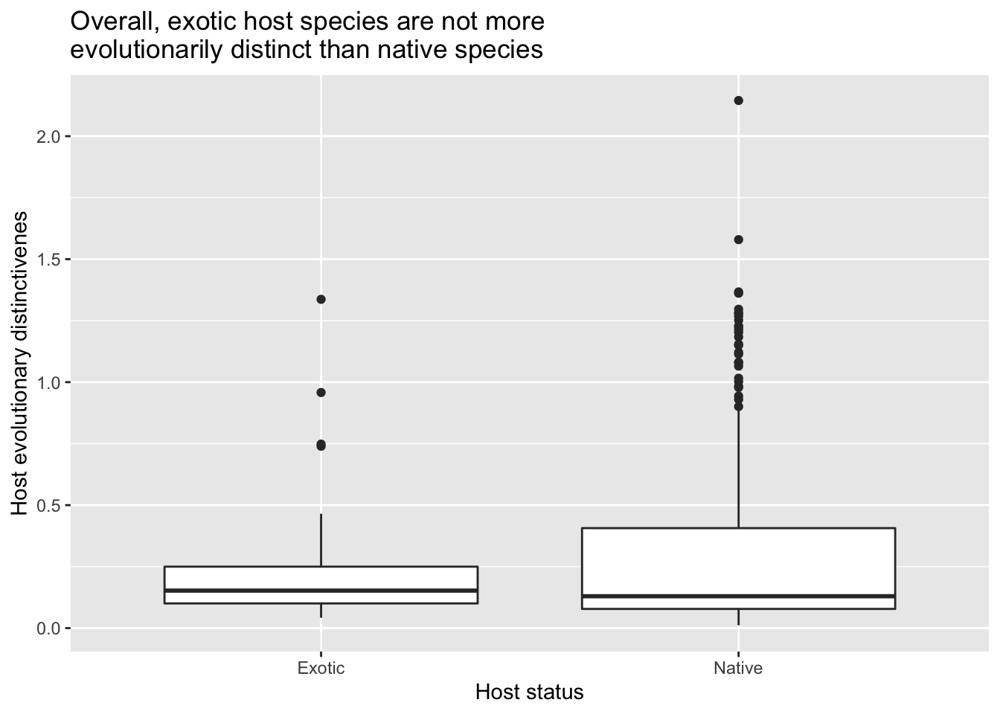

f <- read_csv("~/Dropbox/andrew/RCN/data/mexicanFish/FISH_PARASITE_DATASET.csv")Consequences of parasite specificity: fish parasites in Mexico
This analysis uses the data from García-Prieto et al. (2022) to study consequences of parasite specificity.
First, we read in the host-parasite data
Next, we read in a fish phylogenetic tree
library(ape)
tree <- ape::read.tree("~/Dropbox/andrew/RCN/data/mexicanFish/actinopt_12k_raxml.tre")In this analysis, we focus on adult stages of the parasites, and their associations with host species. Q1: are there differences between larval-host associations? - i.e., are these hosts sometimes intermediate vs definitive hosts? I think I found 8 instances where the same host-parasite interaction was recorded for Adult and Larva parasite stages. Perhaps there could be separate ‘intermediate’ vs ‘definitive’ host case studies.
f %<>% mutate(Stage=stringr::str_replace_all(Stage,"Adulto","Adult"))
f %<>% dplyr::filter(Stage=="Adult")
# remove host or parasite taxa not identified to species
f %<>% dplyr::filter(grepl("sp\\.",Host_species)==F)
f %<>% dplyr::filter(grepl("sp\\.",Parasite_species)==F)We create a host-parasite matrix
# matrix of host-(adult)parasite associations
m <- as.data.frame.matrix(table(f$Parasite_species,f$Host_species))There are 57 fish species in this analysis where the Latin binomial in the host-parasite database doesn’t match to the fish phylogeny data. Q2: Can someone help explore synonyms or confirm missing species from phylogeny?
# probably a fish synonym issue, but for now remove host species not in fish phylo
missingFish <- setdiff(colnames(m),tree$tip.label)
# for now we remove from host-parasite data those fish species that are not found in the phylogenetic tree
f %<>% dplyr::filter(!Host_species %in% missingFish)
#reCalc fParas now some species removed
fParas <- f %>% dplyr::select(Parasite_species) %>% distinct() %>% pull()We calculate each parasite’s phylogenetic specificity
#perform mpd analysis
library(picante)
phydist <- ape::cophenetic.phylo(tree)
#reduce phydist to host species in fish database
idx <- which(rownames(phydist) %in% f$Host_species)
phydist.mini <- phydist[idx,idx]
#reduce HP association matrix to fish in phydist
idx <- which(colnames(m) %in% colnames(phydist.mini))
m <- m[,idx]
idx <- which(rowSums(m)!=0)
m <- m[idx,]z <- picante::ses.mpd(m,phydist.mini,null.model="independentswap",runs=1000,abundance.weighted=F)
save(z,file="get_z.Rda")We examine specificity as a function of parasite taxonomy
load("get_z.Rda")
z %<>% mutate(Parasite_species=rownames(.))
paraPhylum <- f %>% dplyr::select(Parasite_species,Phylum_parasite) %>% distinct()
z %<>% left_join(.,paraPhylum)
#z %>% ggplot(.,aes(x=Phylum_parasite,y=mpd.obs.z))+geom_boxplot()+xlab("Parasite phylum")+ylab("Parasite specificity")
z %>% dplyr::filter(Phylum_parasite=="Platyhelminthes") %>% ggplot(.,aes(x=mpd.obs.z)) + geom_density(fill="gray50",alpha=0.3) + xlab("Phylogenetic specificity")+ylab("Density")+theme_minimal()+ggtitle("Platyhelminthes exhibit a wide range of phylogenetic specificity\n values < -1.96 mean hosts statistically more related than expected by chance")We relate sites of infection (in/on host) to host evolutionary distinctiveness. The idea here is that if the host species is unrelated to the other hosts, this could be associated with atypical infection (i.e., maladaptive virulence)
#fish parasites with at least 3 hosts (needed for concept of distinctiveness)
h3 <- z %>% dplyr::filter(ntaxa>2) %>% dplyr::select(Parasite_species) %>% distinct() %>% pull()
#Jaccard function
jaccard <- function(a, b) {
intersection = length(intersect(a, b))
union = length(a) + length(b) - intersection
return (intersection/union)
}
# dataframe to store results
s <- tibble(Parasite_species=character(0),Host_species=character(0),Site_of_infection=character(0),ed=numeric(0),dj=numeric(0))
library(phyloregion)
for (i in 1:length(h3)){# go through all relevant parasites (those with at least 3 host species)
f_ <- f %>% dplyr::filter(Parasite_species==h3[i]) # reduce full dataframe to only this parasite
f_ %<>% dplyr::select(Parasite_species,Host_species,Site_of_infection) %>% distinct() #select only columns: host, parasite, site of infection
f_hosts <- f_ %>% dplyr::select(Host_species) %>% distinct() %>% pull()# identify all the hosts for this parasite
tree_ <- drop.tip(tree,tree$tip.label[-match(f_hosts, tree$tip.label)])# make a mini phylogenetic tree of only the hosts of target parasite
ed <- phyloregion::evol_distinct(tree_,type="equal.splits",use.branch.lengths=T)# get evolutionary distinctiveness of each host species
f_ %<>% left_join(.,data.frame(ed,Host_species=names(ed)))# add evolutionary distinctiveness to reduced dataframe
f_ %<>% mutate(dj=-999) # create placeholder column to store jaccard distances for sites of infection
for (j in 1:dim(f_)[1]){# cycle through each host
a <- f_ %>% dplyr::filter(Host_species==f_$Host_species[j]) %>% dplyr::select(Site_of_infection) %>% distinct() %>% pull()#sites of infection for this host
b <- f_ %>% dplyr::filter(Host_species!=f_$Host_species[j]) %>% dplyr::select(Site_of_infection) %>% distinct() %>% pull()#sites of infection for all other hosts
f_$dj[j] <- jaccard(a,b)#jaccard distance for sites of infection
}
s %<>% bind_rows(.,f_) #add this new case to dataframe "s"
}
z4merge <- z %>% dplyr::select(Parasite_species,mpd.obs.z)#prep specificity data to join to s
s %<>% left_join(.,z4merge)
# plots
library(scales)
s %<>% left_join(.,paraPhylum)
s %<>% mutate(sg=if_else(mpd.obs.z>(-1.96),"g","s"))
s %<>% mutate(dj=round(dj,digits=2))
s %>% dplyr::filter(Phylum_parasite=="Platyhelminthes" & dj>0) %>% ggplot(.,aes(x=as.factor(dj),y=ed))+geom_boxplot()+ylab("Host evolutionary distinctiveness")+xlab("Jaccard's dissimilarity index for host site of infection")+ggtitle("Evolutionarily distinct hosts are more likely\nto have distinct sites of infection")Are the parasites of exotic fish species (that are also parasites of native fish species) a non-random sample?
# first we reload the data and remove parasites only of the exotic species (fER=fishEnemyRelease)
fER <- read_csv("~/Dropbox/andrew/RCN/data/mexicanFish/FISH_PARASITE_DATASET.csv")
exoParas <- fER %>% dplyr::filter(Exotic_or_native=="Exotic") %>% dplyr::select(Parasite_species) %>% distinct() %>% pull()
natParas <- fER %>% dplyr::filter(Exotic_or_native=="Native") %>% dplyr::select(Parasite_species) %>% distinct() %>% pull()
onlyExoParas <- setdiff(exoParas,natParas)
fER %<>% dplyr::filter(!Parasite_species%in%onlyExoParas)
natBoth <- tibble(Parasite_species=exoParas,natBoth="both")
natBoth2 <- tibble(Parasite_species=natParas,natBoth="nat")
natBoth %<>% bind_rows(.,natBoth2)
doubleCounted <- natBoth %>% group_by(Parasite_species) %>% summarize(n=n()) %>% dplyr::filter(n>1) %>% pull(Parasite_species)
forTheChop <- NULL
for (i in 1:dim(natBoth)[1]){
if (natBoth$Parasite_species[i] %in% doubleCounted & natBoth$natBoth[i]=="nat"){
forTheChop <- c(forTheChop,i)
}
}
natBoth %<>% slice(-forTheChop)
# need parasite specificity measured only in native species
# note fER is not filtered to adult stage only (as f is)
fER2 <- fER %>% dplyr::filter(Exotic_or_native=="Native")
mNat <- as.data.frame.matrix(table(fER2$Parasite_species,fER2$Host_species))
#reduce phydist to host species in fish database
idx <- which(rownames(phydist) %in% fER2$Host_species)
phydist.nat <- phydist[idx,idx]
#reduce HP association matrix to fish in phydist
idx <- which(colnames(mNat) %in% colnames(phydist.nat))
mNat <- mNat[,idx]
idx <- which(rowSums(mNat)!=0)
mNat <- mNat[idx,]zNat <- picante::ses.mpd(mNat,phydist.nat,null.model="independentswap",runs=1000,abundance.weighted=F)
save(zNat,file="get_zNat.Rda")load("get_zNat.Rda")
zNat %<>% mutate(Parasite_species=rownames(.))
zNat %<>% left_join(.,paraPhylum)
zNat %<>% left_join(.,natBoth)
zNat %<>% drop_na(Phylum_parasite,mpd.obs.z)
#zNat %>% ggplot(.,aes(as.factor(natBoth),y=mpd.obs.z))+geom_boxplot()+facet_wrap(~Phylum_parasite)
#platyhelminthes
zNatPlat <- zNat %>% dplyr::filter(Phylum_parasite=="Platyhelminthes")
zNatPlat %<>% mutate(sg=if_else(mpd.obs.z>(-1.96),"g","s"))
#zNatPlat %>% ggplot(.,aes(as.factor(natBoth),y=mpd.obs.z))+geom_boxplot()+facet_wrap(~sg)
#zNatPlat %>% ggplot(.,aes(as.factor(natBoth),y=ntaxa))+geom_boxplot()+facet_wrap(~sg)
plot1 <- zNatPlat %>% ggplot(.,aes(as.factor(natBoth),y=mpd.obs.z))+geom_boxplot()+facet_wrap(~sg)+ggtitle("Extreme generalist (g) and specialist (s) platyhelminthes\nare more likely to infect exotic hosts (nat=native only, both=native and exotic)")+xlab("Type of host")+ylab("Parasite specificity")
#zNatPlat %>% ggplot(.,aes(x=mpd.obs.z,fill=as.factor(natBoth)))+geom_density(alpha=0.3)
#nematoda
zNatNem <- zNat %>% dplyr::filter(Phylum_parasite=="Nematoda")
zNatNem %<>% mutate(sg=if_else(mpd.obs.z>(-1.96),"g","s"))
#zNatNem %>% ggplot(.,aes(as.factor(natBoth),y=mpd.obs.z))+geom_boxplot()+facet_wrap(~sg)
#zNatNem %>% ggplot(.,aes(as.factor(natBoth),y=ntaxa))+geom_boxplot()+facet_wrap(~sg)
plot2 <- zNatNem %>% ggplot(.,aes(as.factor(natBoth),y=mpd.obs.z))+geom_boxplot()+facet_wrap(~sg)+ggtitle("Nematoda")+xlab("Type of host")+ylab("Parasite specificity")
#zNatNem %>% ggplot(.,aes(x=mpd.obs.z,fill=as.factor(natBoth)))+geom_density(alpha=0.3)
library(patchwork)
plot1#plot1|plot2
exo4join <- f %>% dplyr::select(Host_species,Exotic_or_native) %>% distinct()
exEdByZ <- s %>% dplyr::select(Host_species,Parasite_species,ed) %>% distinct()
exEdByZ %<>% left_join(.,exo4join)
exEdByZ %<>% dplyr::filter(Exotic_or_native=="Exotic")
exEdByZ %<>% left_join(.,paraPhylum)
exEdByZ %<>% left_join(.,z4merge)
#exEdByZ %>% dplyr::filter(Phylum_parasite=="Platyhelminthes") %>% ggplot(.,aes(x=ed,y=mpd.obs.z))+geom_point()+xlab("Exotic host evolutionary distinctiveness")+ylab("Parasite specificity")x <- s %>% left_join(.,exo4join)
x %<>% dplyr::select(Host_species,Parasite_species,ed,mpd.obs.z,sg,Exotic_or_native)
x %<>% left_join(.,paraPhylum)
x %<>% dplyr::filter(Phylum_parasite=="Platyhelminthes")
x %<>% mutate(alphaLevel=if_else(Exotic_or_native=="Exotic",1,0.9))
x %>% ggplot(.,aes(x=ed,y=mpd.obs.z,col=Exotic_or_native))+geom_point(aes(alpha=alphaLevel))+xlab("Host evolutionary distinctiveness")+ylab("Parasite phylogenetic specificty")+guides(alpha="none")+scale_color_discrete(name="Host status")+ggtitle("Parasites of hosts tend to be more generalist\nas host evolutionary distinctiveness increases")x %>% dplyr::select(ed,Exotic_or_native) %>% distinct() %>% ggplot(.,aes(x=Exotic_or_native,y=ed))+geom_boxplot()+xlab("Host status")+ylab("Host evolutionary distinctivenes")+ggtitle("Overall, exotic host species are not more\nevolutionarily distinct than native species")